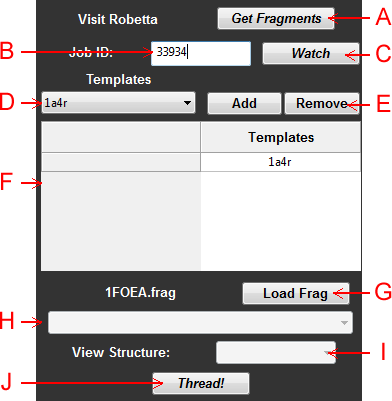

Abstract: The purpose of the comparative structure prediction panel is to provide an interface to thread a protein sequence onto an existing homologous template for de novo structure prediction. It currently relies on the Robetta server to generate the fragments. In the future we plan to try to setup the in-house server daemon to be able to run make_fragments.pl locally. Robetta is currently only available for academic use.

Figure 1: Schematic of the comparative structure prediction panel
A: Get Fragments - A button that simply opens the Robetta fragments server web page in your default web browser.
B: Job ID - After you submit a fragments job at Robetta, you will be given an ID which is usually a 5-digit integer. Enter that ID here and click the "watch" button to have InteractiveROSETTA start looking for the fragments file to be generated. One it is available, you will be notified and it will be downloaded.
C: Watch - Start listening for a fragments file to be generated for the indicated job ID.
D: Model Menu - A menu consisting of all currently loaded model. Use this to select which of these models are homologous to the structure being modeled.
E: Model Controls - Use these buttons to add and remove models from the list of homologous proteins.
F: Homologous Proteins - A list of all structures that are potentially similar to the structure being modeled. Rosetta will attempt to thread the primary sequence onto these structures, modeling in loops in the indel regions.
G: Load Fragments - Use this button to specify the location of the fragments file generated from Robetta.
NOTE: If you download the results manually, it will not be formatted properly. InteractiveROSETTA generates .frag files by reading the data in the uploaded directory to a single file and compressing it into a .gz archive. If you do this manually, you need to start a new text file and add all of the data from the fragments files, the fasta file, the psipred file, and the psipred_ss2 file into this text file. The data from each file should be delimited as follows:
BEGIN filename.ext
...
END filename.ext
Then compress the text file to a GZ archive. It is recommended to use the Job ID watch so all of this is done automatically.
H: Scoretype Menu - Specify the scoretype by which to color residues after completion of a design.
I: View Structure Menu - After comparative modeling, this menu will be populated with the residues in the structure prediction. Select from the menu to easily do a neighborhood view on that residue in the protein.
J: Thread/Finalize - Start the comparative modeling job. This button becomes the Finalize button after comparative modeling to allow you to accept or reject the model.